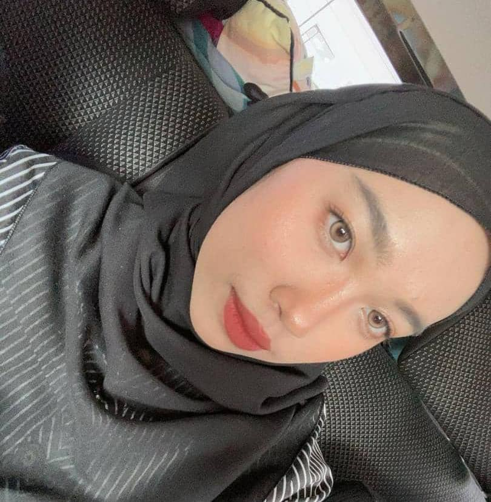
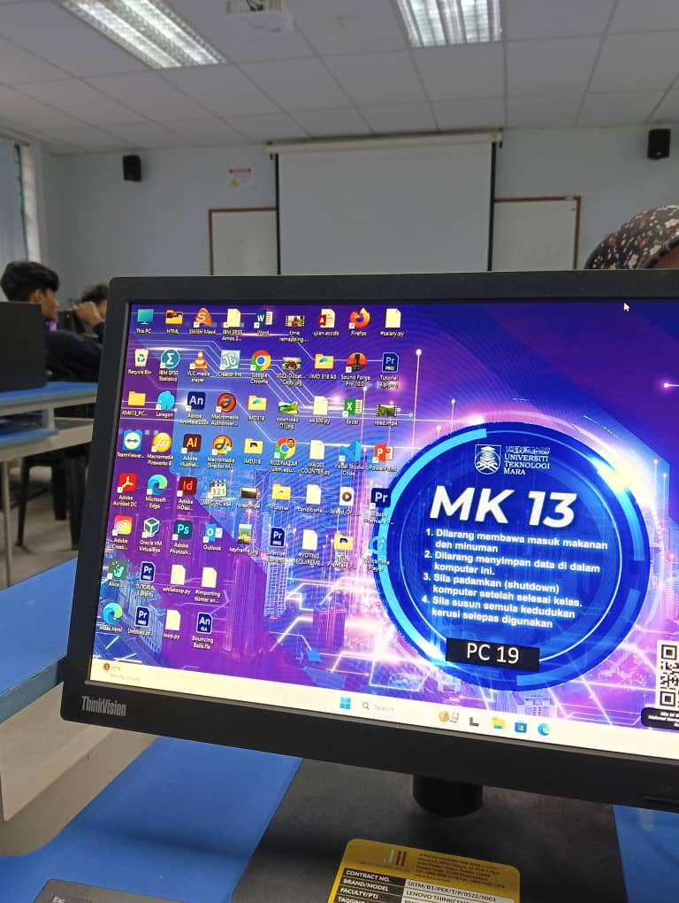
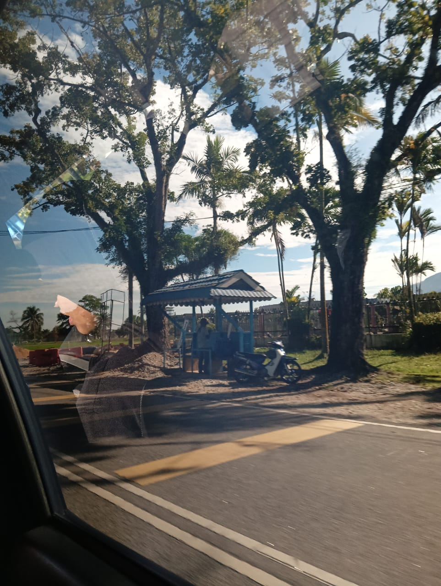
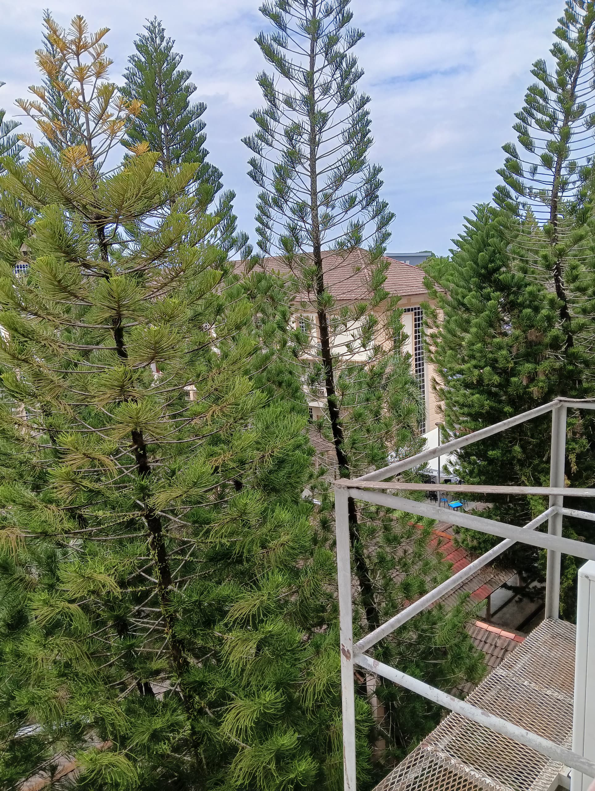
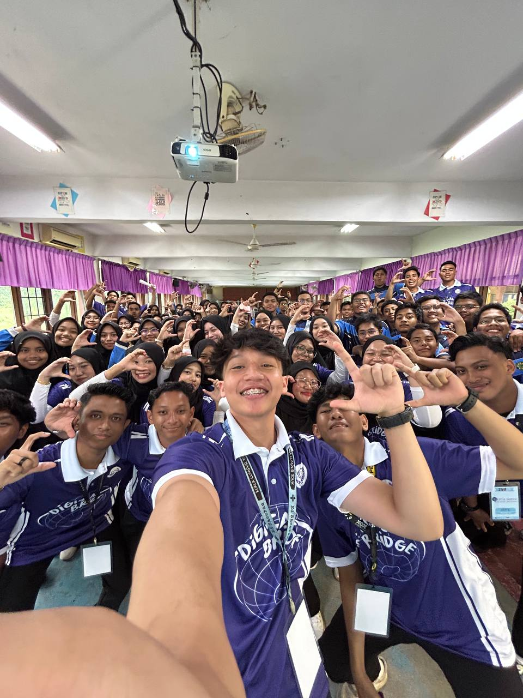

My Biography
My name is Aisyah Nadhirah binti Ahamad Khairi, and I am currently in the last semester of my diploma studies at UiTM Kedah. I am 20 years old and the youngest child in my family. I enjoy things that bring me a sense of calm, such as the beautiful scenery around me and listening to R&B music.

Fav Song : Shouldn't Be
Latest Update Photos



